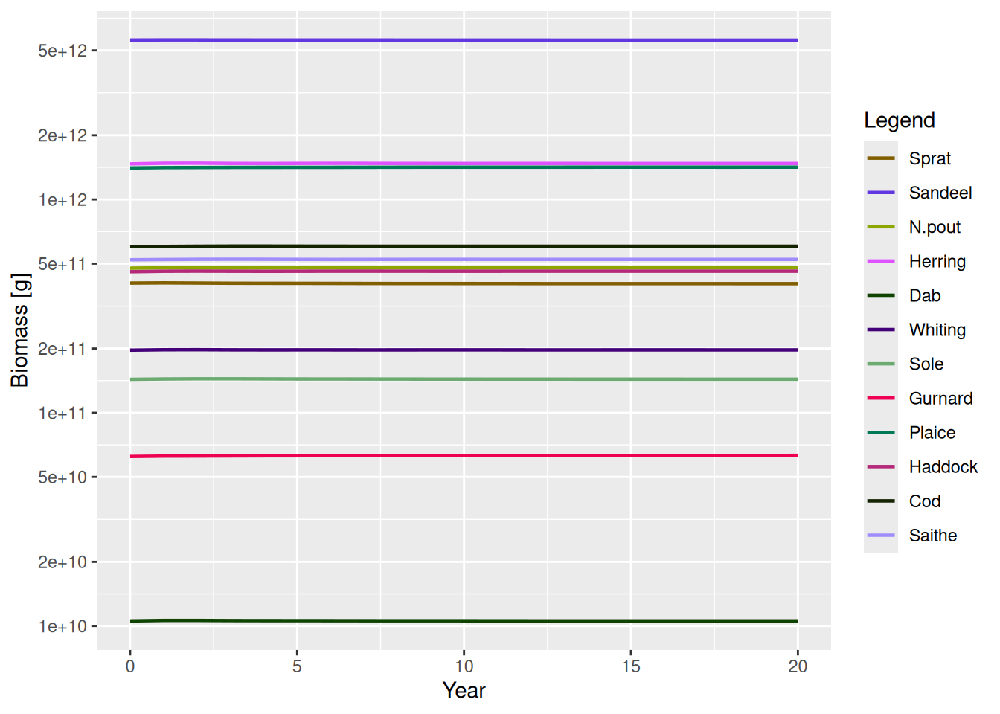
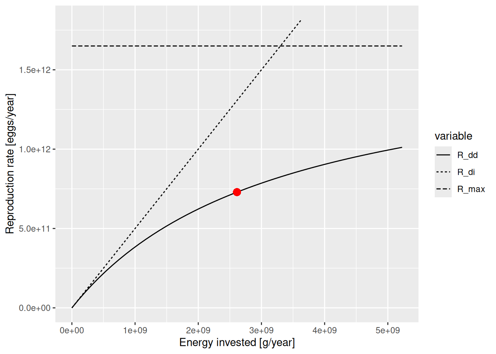
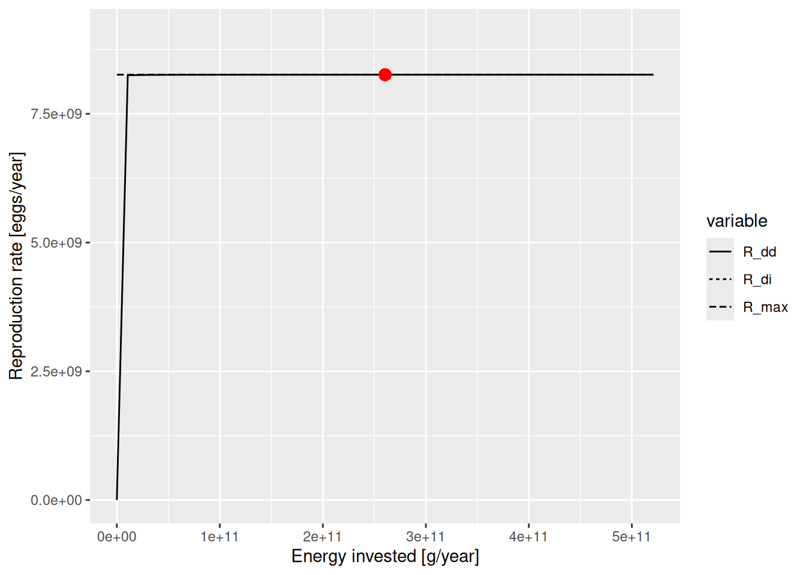
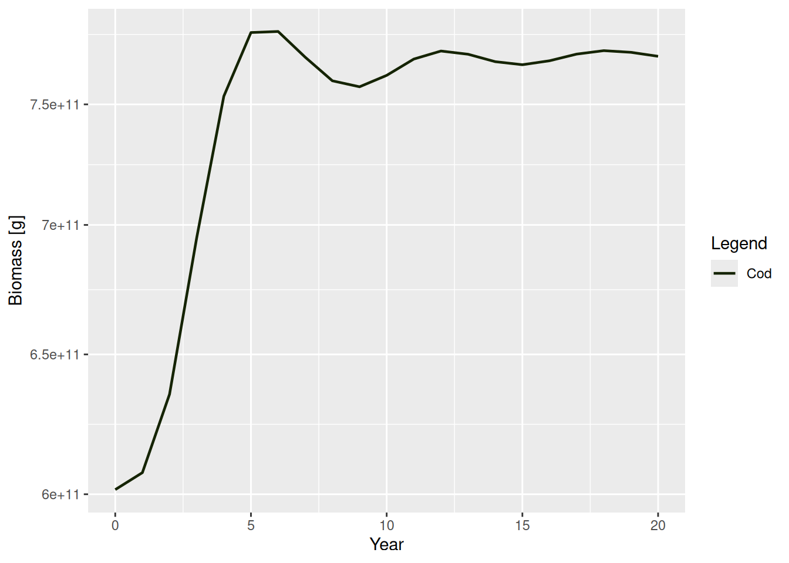
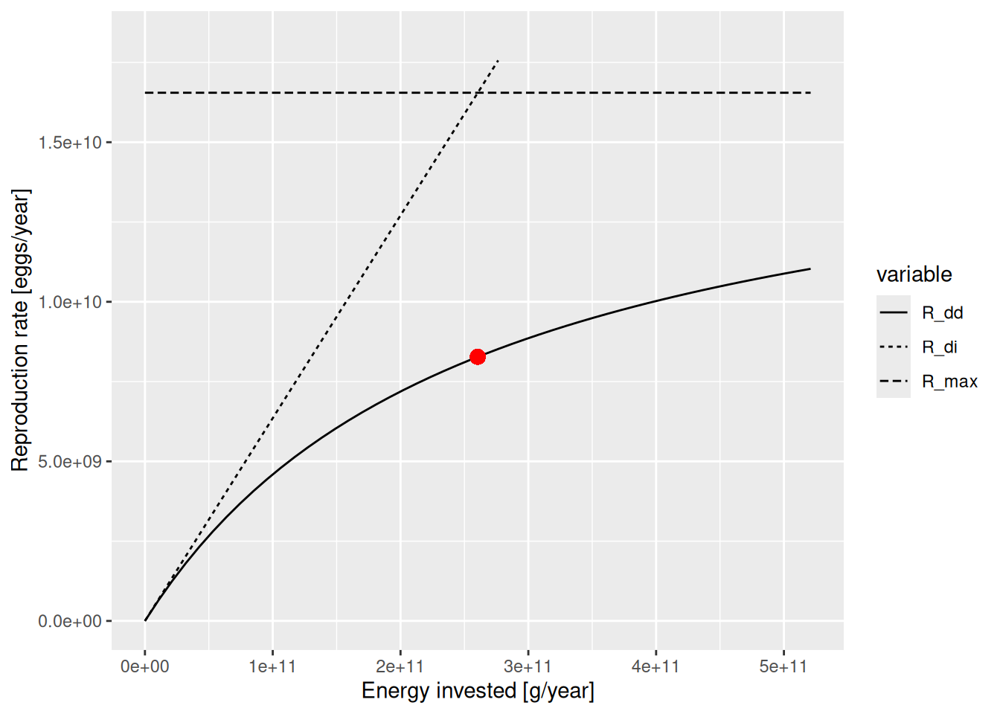
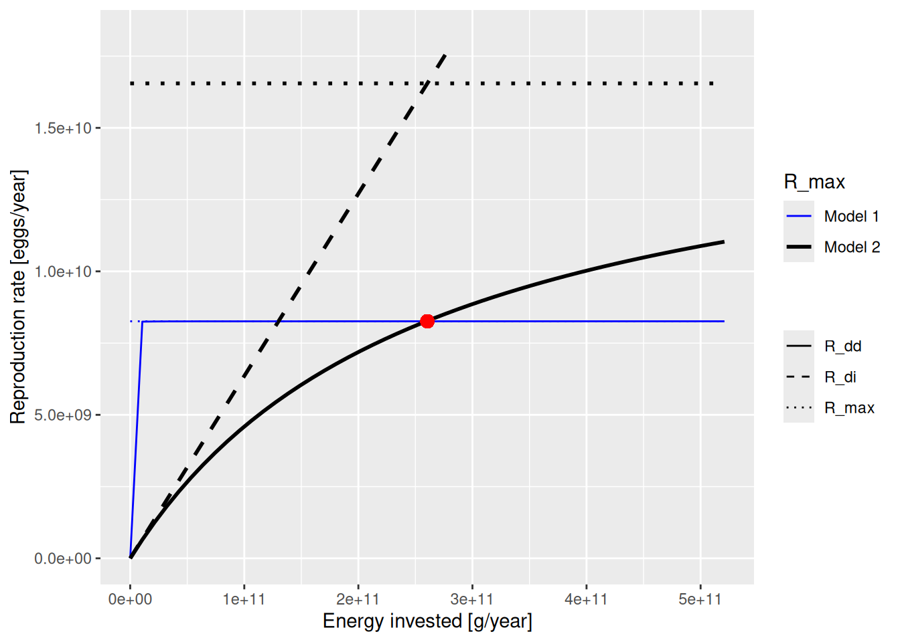
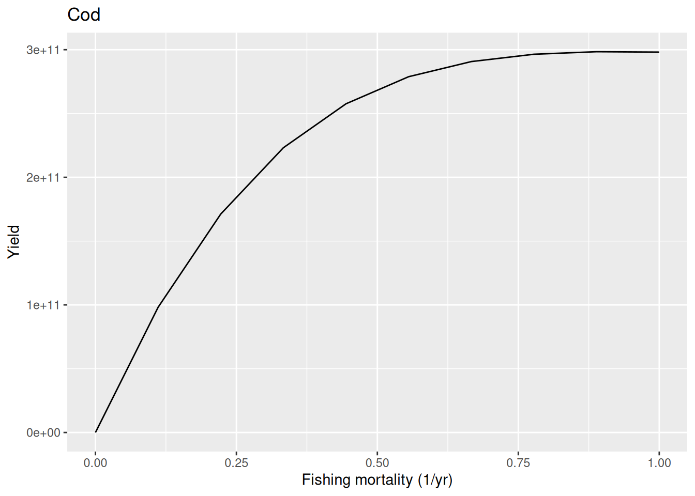
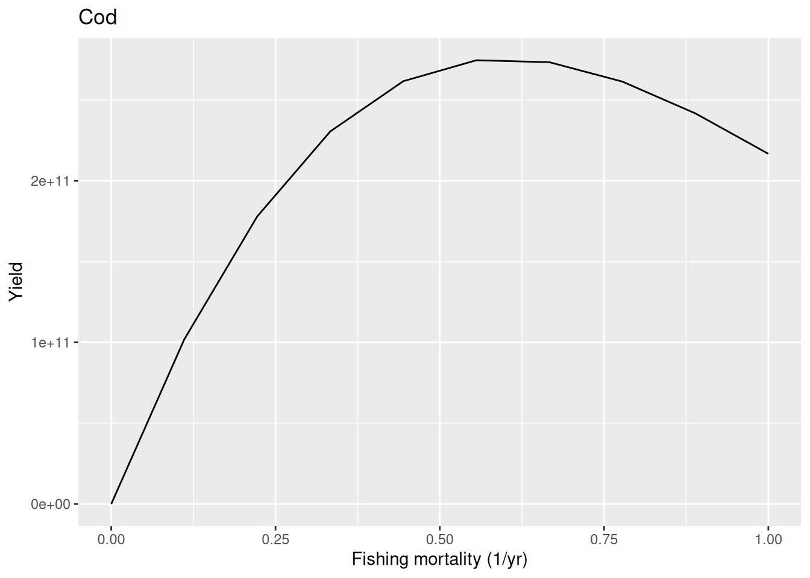

library(mizer)
packageVersion("mizer")[1] '2.5.4.9011'The take-home message is that it is important to set the density dependence in your model appropriately and that with the help of the setBevertonHolt() function you can easily make changes to the density dependence without spoiling other aspects of your calibrated model.
In this blog post I want to discuss the purpose of the setBevertonHolt() function, which was improved in the latest version 2.2.1 of mizer to make it convenient to control the density-dependence in reproduction. We’ll introduce the new concept of the reproduction level and meet the related new function getReproductionLevel().
Before we get started we need to clarify what we mean by density dependence in reproduction in a mizer model.
Usually, in a fisheries model, density dependence is specified via a stock-recruitment relationship, which gives a non-linear relationship between the spawning stock biomass and the recruitment. This relationship could, for example, be described by a Beverton-Holt curve. In that case for low spawning stock biomass the recruitment is assumed to be linearly proportional to the spawning stock biomass but for higher spawning stock biomass the curve flattens and asymptotically approaches a maximum recruitment rate that will never be exceeded, no matter how high the spawning stock biomass.
In a mizer model things are different because many of the causes of the density dependence in recruitment are explicitly modelled mechanistically, so don’t need to be imposed externally. These causes are:
The rate at which a spawner invests energy into reproduction depends on its food intake. So if there is a high abundance of fish and hence a lot of competition for prey, each spawner will produce fewer offspring.
Fish larvae are exposed to mortality from predation by larger fish. So the higher the abundance of larger fish, the higher the mortality and the fewer of the offspring will reach recruitment size.
The rate at which fish larvae grow, and hence the time they take to reach recruitment size, will depend on the availability of resources. If there are many fish larvae competing for limited resources, they will be exposed to mortality for longer, meaning fewer of them will reach recruitment size.
All these causes of density dependence are automatically taken into account in mizer, because growth depends on the abundance of prey and mortality depends on the abundance of predators. This dynamically generates fully multi-species stock-recruitment relationships.
However, there are other causes of density dependence besides the three listed above, and these are not explicitly modelled mechanistically by mizer. An example would be the limited carrying capacity of suitable spawning grounds and other spatial effects. The way such additional density dependencies can be taken into account in a mizer model is by specifying a non-linear relationship between the energy that the spawners invest into reproduction and the number of larvae this results in. It is this extra density-dependence that we will be concerned with in this blog post.
To make things concrete in this blog post we will use the example MizerParams object NS_params, included in mizer, that describes the fish community in the North Sea. Let’s have a quick look at that MizerParams object.
First we load the mizer package. We are using the currently latest version of mizer, version 2.2.1.
library(mizer)
packageVersion("mizer")[1] '2.5.4.9011'A MizerParams object comes with initial size spectra for all species and the resource. Let’s plot these for the North Sea params object.
params <- NS_params
plotSpectra(params, power = 2)
These initial spectra were chosen to describe a steady state of the model, meaning that if we project forward in time with constant fishing effort, the abundances stay constant. Let’s verify that.
sim <- project(NS_params, t_max = 20)
plotBiomass(sim)
We’ll use this model below
By default, mizer uses a Beverton-Holt curve to describe the relationship between the rate \(E_R\) at which energy is invested into reproduction and the rate \(R\) at which offspring are produced.
To make this concrete, we’ll look at an example. I have written a function for the purpose of this blog post called plotBevertonHolt() which we can use to look at the Beverton-Holt curve for a given species in a model.
library(ggplot2)
plotBevertonHolt <- function(params, species) {
select <- species_params(params)$species == species
erepro <- species_params(params)$erepro[select]
w0 <- params@w[params@w_min_idx[select]]
E_R_ss <- getRDI(params)[select] / erepro * 2 * w0
R_dd_ss <- getRDD(params)[select]
R_max <- species_params(params)$R_max[select]
E_R <- seq(0, 2 * E_R_ss, length.out = 50)
R_di = erepro * E_R / 2 / w0
R_dd <- R_di / (1 + R_di / R_max)
df <- melt(data.frame(E_R, R_dd, R_di, R_max), id.vars = "E_R")
ggplot(df) +
geom_line(aes(x = E_R, y = value, linetype = variable)) +
geom_point(aes(x = E_R_ss, y = R_dd_ss), size = 3, color = "red") +
ylim(NA, 1.1 * R_max) +
ylab("Reproduction rate [eggs/year]") +
xlab("Energy invested [g/year]")
}We use that function to plot the Beverton-Holt curve for Gurnard in our example model
plotBevertonHolt(params, "Gurnard")
The solid line is the Beverton-Holt curve. The horizontal dashed line shows the maximum reproduction rate that the Beverton-Holt curve approaches for large \(E_R\) and the dotted line shows the density-independent reproduction. The current reproduction rate is marked on the curve by a red dot. The curve shows us how the reproduction rate would change as the rate of investment into reproduction changes.
There are two parameters involved in determining this curve:
The reproductive efficiency erepro determines the slope of the curve when reproduction is low,
The maximum reproduction rate R_max determines the asymptote to which the curve levels off eventually.
Let us look up the values to which the reproductive efficiency erepro and the maximal recruitment rate R_max are set for Gurnard in this example model.
select_gurnard <- species_params(params)$species == "Gurnard"
species_params(params)[select_gurnard, c("erepro", "R_max")] erepro R_max
Gurnard 1 1.65e+12We define the reproduction level as the ratio between the current reproduction rate and the maximum reproduction rate. Thus it is a number between 0 and 1. It is similar to the feeding level which in mizer is defined as the ratio between tha actual feeding rate and the maximum feeding rate.
Since version 2.2.1 of mizer there is a function getReproductionLevel() for calculating the reproduction level.
reproduction_level <- getReproductionLevel(params)
reproduction_level Sprat Sandeel N.pout Herring Dab Whiting Sole
0.99074238 0.99987053 0.92829319 0.99198802 0.99578514 0.98718674 0.99643774
Gurnard Plaice Haddock Cod Saithe
0.44189813 0.08022106 0.94443443 0.99993658 0.99767830 We see that the reproduction level of Gurnard is 0.4418981, which agrees with the height of the red dot in relation to the maximum in the above plot of the Beverton Holt curve for Gurnard.
Most of the other species have unrealistically large reproduction levels, very close to 1. To see why that is bad let’s look for example at the curve for Cod:
plotBevertonHolt(params, "Cod")
This looks so strange because the actual reproduction rate is very close to the maximum reproduction rate, so that we are very far to the right of the Beverton-Holt curve where it is almost flat. The density dependence here is so strong that an increase or decrease in the energy invested into reproduction leads to almost no change in the reproduction. In other words, the spawning stock biomass has almost no effect on the number of eggs produced. That is not realistic, so before using this model we should reduce the reproduction level.
We could reduce the reproduction level by either reducing the reproductive efficiency erepro or by increasing R_max, but there is a subtlety. Given that the reproduction level is the ratio of the actual reproduction rate and the maximum reproduction rate R_max, we might think that doubling R_max would reduce the reproduction level by a factor of 2. Let’s check that in the example of Cod:
select_cod <- species_params(params)$species == "Cod"
params_changed_R_max <- params
species_params(params_changed_R_max)$R_max[select_cod] <-
2 * species_params(params_changed_R_max)$R_max[select_cod]
getReproductionLevel(params_changed_R_max)[select_cod] Cod
0.9998732 The reproduction level has changed very little. The reason is that besides raising the maximum reproduction, we have also changed the Beverton-Holt curve and the actual reproduction has also increased.
The other problem with changing either erepro or R_max in isolation is that we will move away from the steady state. We can see that by projecting our changed params object forward in time:
sim_changed_R_max <- project(params_changed_R_max, t_max = 20)
plotBiomass(sim_changed_R_max, species = "Cod")
This is bad news if we had carefully calibrated our model to observed biomasses for example.
What we need to do is change both erepro and R_max at the same time in such a way that the actual reproduction does not change. This is what the function setBevertonHolt() does.
params2 <- setBevertonHolt(params, reproduction_level = c(Cod = 0.5))
plotBevertonHolt(params2, "Cod")Warning in geom_point(aes(x = E_R_ss, y = R_dd_ss), size = 3, color = "red"): All aesthetics have length 1, but the data has 150 rows.
ℹ Please consider using `annotate()` or provide this layer with data containing
a single row.Warning: Removed 23 rows containing missing values or values outside the scale range
(`geom_line()`).
To see more clearly what has happened, we extend our plotBevertonHolt() function to show both the old and the new Beverton-Holt curve in the same graph.
plotBevertonHolt2 <- function(params, params2, species) {
select <- species_params(params)$species == species
erepro <- species_params(params)$erepro[select]
w0 <- params@w[params@w_min_idx[select]]
E_R_ss <- getRDI(params)[select] / erepro * 2 * w0
R_dd_ss <- getRDD(params)[select]
E_R <- seq(0, 2 * E_R_ss, length.out = 50)
R_max <- species_params(params)$R_max[select]
R_di = erepro * E_R / 2 / w0
R_dd <- R_di / (1 + R_di / R_max)
df <- melt(data.frame(E_R, R_dd, R_di, R_max), id.vars = "E_R")
df$Model <- "Model 1"
erepro <- species_params(params2)$erepro[select]
R_max <- species_params(params2)$R_max[select]
R_di = erepro * E_R / 2 / w0
R_dd <- R_di / (1 + R_di / R_max)
df2 <- melt(data.frame(E_R, R_dd, R_di, R_max), id.vars = "E_R")
df2$Model <- "Model 2"
ggplot(rbind(df, df2)) +
geom_line(aes(x = E_R, y = value, linetype = variable,
colour = Model, size = Model)) +
geom_point(aes(x = E_R_ss, y = R_dd_ss), size = 3, color = "red") +
ylim(NA, 1.1 * R_max) +
ylab("Reproduction rate [eggs/year]") +
xlab("Energy invested [g/year]") +
labs(linetype = "", size = "R_max", colour = "R_max") +
scale_size_manual(values = c(0.5, 1)) +
scale_colour_manual(values = c("blue", "black")) +
scale_linetype_manual(values = c("solid", "dashed", "dotted"))
}plotBevertonHolt2(params, params2, "Cod")Warning: Using `size` aesthetic for lines was deprecated in ggplot2 3.4.0.
ℹ Please use `linewidth` instead.Warning in geom_point(aes(x = E_R_ss, y = R_dd_ss), size = 3, color = "red"): All aesthetics have length 1, but the data has 300 rows.
ℹ Please consider using `annotate()` or provide this layer with data containing
a single row.Warning: Removed 72 rows containing missing values or values outside the scale range
(`geom_line()`).
This shows that the red dot that marks the steady state value lies on both the old (blue) and the new (black) curve. This was achieved by lowering erepro at the same time as increasing R_max. The old values were
species_params(params)[select_cod, c("erepro", "R_max")] erepro R_max
Cod 1 8.26e+09and the new values are
species_params(params2)[select_cod, c("erepro", "R_max")] erepro R_max
Cod 0.0001270809 16549691091So the change in the reproduction level has been achieved without a change to the steady state. We can verify this:
sim2 <- project(params2, t_max = 20)
plotBiomass(sim2)The reason why it matters what level of density dependence in reproduction is chosen for the model is that it affects the sensitivity of the model to perturbations, for example to changes in fishing pressure. To illustrate this we will plot the sustainable fishing yield as a function of fishing mortality.
The mizerExperimental package contains a function plotYieldVsF() that creates such a Yield versus F plot. The mizerExperimental package is updated frequently and thus it is a good idea to install the latest version
remotes::install_github("sizespectrum/mizerExperimental")library(mizerExperimental)
packageVersion("mizerExperimental")[1] '2.5.3.9000'Here is the Yield versus F plot for Cod in the old model with the high reproduction level:
plotYieldVsF(params, "Cod")
This plot shows the sustainable fishing yields at different levels of imposed fishing mortality. This is calculated by running the model with each level of fishing mortalit for long enough to reach a steady state. Then the yield in that steady state is plotted. For high fishing mortality the stock should collapse and the yield in the steady state should therefore be very low at high fishing mortalities. However in this model we see that the stock can sustain unrealistically high fishing mortalities without collapsing.
For the new model, with a reproduction level of 1/2, the curve looks more realistic:
plotYieldVsF(params2, "Cod")
In this model at a fishing mortality of 2 per year the stock collapses completely, leading to zero yield.
setBevertonHolt()
As you can see from the help page of setBevertonHolt(), you can adjust the density dependence in the reproduction of several species at once. For example we can try to set the reproduction level to 1/2 for all species:
params3 <- setBevertonHolt(params, reproduction_level = 0.5)Warning in setBevertonHolt.MizerParams(params, reproduction_level = 0.5): The following species require an unrealistic value greater than 1 for `erepro`: Gurnard, PlaiceThis gave us a warning. Let’s take a look at plaice, for example:
select_plaice <- species_params(params)$species == "Plaice"
species_params(params3)[select_plaice, c("erepro", "R_max")] erepro R_max
Plaice 1.842465 6.556383e+13We see that to achieve a reproduction level of 1/2 while maintaining plaice at its initial abundance, it would need a very high reproductive efficiency.
Let’s see what happens if we try to force the reproductive efficiency to a more realistic level of 0.1:
params3 <- setBevertonHolt(params, erepro = c("Plaice" = 0.1))Warning in setBevertonHolt.MizerParams(params, erepro = c(Plaice = 0.1)): For the following species `erepro` has been increased to the smallest possible value: erepro[Plaice] = 0.921species_params(params3)[select_plaice, c("erepro", "R_max")] erepro R_max
Plaice 0.9212325 InfTo understand what is going on here we have to recall that setBevertonHolt() will not make changes that would change the abundances in the model. The level of abundance for plaice specified in the model can only be achieved with a high reproductive efficiency.
If we want to force the change in erepro we can do that but have to accept that the steady state will change:
species_params(params3)$erepro[select_plaice] <- 0.1
sim3 <- project(params3, t_max = 20)
plotlyBiomass(sim3)We see that this change also affects the abundances of the other species. I think this nicely illustrates the differences of adjusting reproduction parameters with setBevertonHolt() as opposed to changing them directly.
We can also set the reproduction level to 0.
params4 <- setBevertonHolt(params, reproduction_level = 0)This does not mean that we have set reproduction to 0, but rather that we have turned off the density dependence in reproduction. In other words, the reproduction level is zero because we have set the maximum reproduction rate to infinity.
species_params(params4)$R_max [1] Inf Inf Inf Inf Inf Inf Inf Inf Inf Inf Inf InfI want to stress that the fact that we have turned off all the density dependence in reproduction does not mean that the stock-recruitment relationship is linear. All the density dependencies mentioned at the start of this blog post are still operating. We are simply not imposing any additional density dependence that is not already captured by the model.
The built-in density dependencies are enough to keep the model stable, in the sense that if we make changes to the initial abundances, after a time the system will settle down to a steady state again:
params5 <- params4
initialN(params5) <- 4 * initialN(params4)
sim5 <- project(params5)
plotlyBiomass(sim5)We have discussed that in the mizer model many sources of density dependence in recruitment are captured automatically but that one can take into account additional density dependence in recruitment by imposing a density dependence on the reproduction, by which we mean to impose a non-linear relation between the rate at which energy is invested into reproduction and the rate at which offspring are produced.
We looked at some Beverton-Holt curves which are used in mizer by default to encode this non-linearity. These curves are specified by two parameters: the reproductive efficiency erepro and the maximum reproduction rate R_max. The setBevertonHolt() function allows us to change both of these parameters together without changing the current reproduction rate. It only affects the behaviour of the model when it is perturbed away from the current state.
Therefore the setBevertonHolt() function allows us to control the sensitivity of the model to perturbations, like changes in fishing for example, without changing the steady-state properties. This allows a two-stage approach to calibrating a mizer model: in a first step one calibrates the steady state properties to reproduce averaged observations, like growth rates and biomasses or yields of species for example. In a second step on the calibrates the sensitivity of the model, for example by matching it to time series observations.